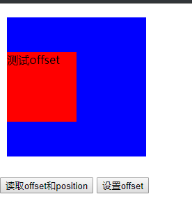

目录
简称：jQuery函数($/jQuery)
jQuery库向外直接暴露的就是$ / jQuery
当引入jQuery库后，直接使用$即可
简称：jQuery对象
得到jQuery对象：执行jQuery函数返回的就是jQuery对象
使用jQuery对象：$obj.xxx()
console.log(typeof $) //$是一个function
console.log($ === jQuery) //true $与jQuery等同
console.log($ === window.$) //true $是一个全局函数
console.log(typeof $()) //"object" 这个对象就是jQuery对象
$('button').click(function () {
alert(this.innerHTML)
})jQuery核心函数，首先作为一个函数，可以当作普通的函数调用，根据不同的参数类型衍生不同的使用方式。其次，函数也是一个对象，就是说jQuery核心函数也可以作为对象来使用。
<!DOCTYPE html>
<html>
<head>
<meta charset="UTF-8">
<title>03_jQuery核心函数</title>
</head>
<body>
<div>
<button id="btn">测试</button><br/>
<input type="text" name="msg1"/><br/>
<input type="text" name="msg2"/><br/>
</div>
<script src="js/jquery-1.10.1.js" type="text/javascript"></script>
<script type="text/javascript">
/*
需求1. 点击按钮: 显示按钮的文本, 显示一个新的输入框
需求2. 遍历输出数组中所有元素值
需求3. 去掉" my atguigu "两端的空格
*/
/*需求1. 点击按钮: 显示按钮的文本, 显示一个新的输入框*/
//1). 参数为函数 : 当DOM加载完成后，执行其中的函数 回调函数
$(function () {
//2). 参数为选择器(selector)字符串: 查找所有匹配的标签, 并将它们封装成jQuery对象
var $btn = $("#btn")
$btn.click(function () {
//显示按钮的文本
//this就是发生事件的dom元素对象(也就是button)
//3). 参数为DOM对象: 将dom对象封装成jQuery对象
var text = $(this).html()
alert(text)
//显示一个新的输入框
//4). 参数为html标签字符串 (用得少): 创建标签对象并封装成jQuery对象
$('<input type="text" name="msg3" /><br />').appendTo('div')
})
})
/*需求2. 遍历输出数组中所有元素值*/
var arr = [123, 'atguigu', true]
// 1). $.each() : 隐式遍历数组
$.each(arr, function (index, item) {
console.log('第' + (index + 1) + '个元素的值为' + item)
})
/*需求3. 去掉" my atguigu "两端的空格*/
var str = " my atguigu "
// 2). $.trim() : 去除两端的空格
console.log(str.trim() === 'my atguigu')
console.log($.trim(str) === 'my atguigu') //true
</script>
</body>
</html>执行jQuery函数返回的就是jQuery对象，jQuery对象是一个包含所有匹配的任意多个dom元素的伪数组对象。
<!DOCTYPE html>
<html>
<head>
<meta charset="UTF-8">
<title>04_jQuery对象</title>
</head>
<body>
<button>测试一</button>
<button>测试二</button>
<button id="btn3">测试三</button>
<button>测试四</button>
<script src="js/jquery-1.10.1.js" type="text/javascript"></script>
<script type="text/javascript">
$(function () {
var $btns = $('button')
console.log($btns)
// 需求1. 统计一共有多少个按钮
/*size()/length: 包含的DOM元素个数*/
console.log($btns.size(), $btns.length) // 4 4
// 需求2. 取出第2个button的文本
/*[index]/get(index): 得到对应位置的DOM元素*/
console.log($btns[1].innerHTML, $btns.get(1).innerHTML) // 测试二 测试二
// 需求3. 输出所有button标签的文本
/*each(): 遍历包含的所有DOM元素*/
$btns.each(function(index, domEle){
console.log(index, domEle.innerHTML, this) // this指的是每个dom对象
})
$btns.each(function () {
console.log(this.innerHTML) // 测试一 测试二 测试三 测试四
})
// 需求4. 输出'测试三'按钮是所有按钮中的第几个
/*index(): 得到在所在兄弟元素中的下标*/
console.log($('#btn3').index()) // 2
})
</script>
</body>
</html>/**
* 1. 伪数组
* Object对象
* length属性
* 数值下标属性
* 没有数组特别的方法： forEach() push() pop() splice()
*/
console.log($btns instanceof Array) // false
// 自定义一个伪数组
var weiArr = {};
weiArr.length = 0;
weiArr[0] = 'atguigu';
weiArr.length = 1;
weiArr[1] = 123;
weiArr.length = 2;
for (var i = 0; i < weiArr.length; i++) {
var obj = weiArr[i];
console.log(i, obj); // 1 123
}
console.log(weiArr.forEach, $btns.forEach); // undefined undefined选择器本身只是一个有特定语法规则的字符串，没有实质用处。它的基本语法规则使用的就是CSS的选择器语法，并基于此进行了扩展。$(selector)的作用是根据选择器规则在整个文档中查找所有匹配的标签的数组，并封装成jQuery对象返回。
#id*<!DOCTYPE html>
<html>
<head>
<meta charset="UTF-8">
<title>05_基本选择器</title>
</head>
<body>
<div id="div1" class="box">div1(class="box")</div>
<div id="div2" class="box">div2(class="box")</div>
<div id="div3">div3</div>
<span class="box">span(class="box")</span><br>
<ul>
<li>AAAAA</li>
<li title="hello">BBBBB(title="hello")</li>
<li class="box">CCCCC(class="box")</li>
<li title="hello">DDDDDD(title="hello")</li>
</ul>
<script src="js/jquery-1.10.1.js" type="text/javascript"></script>
<script type="text/javascript">
$(function () {
// 1. 选择id为div1的元素
$('#div1').css('background', 'red')
// 2. 选择所有的div元素
$('div').css('background', 'red')
// 3. 选择所有class属性为box的元素
$('.box').css('background', 'red')
// 4. 选择所有的div和span元素
$('div,span').css('background', 'red')
// 5. 选择所有class属性为box的div元素
$('div.box').css('background', 'red') //不能写.boxdiv
})
</script>
</body>
</html><!DOCTYPE html>
<html>
<head>
<meta charset="UTF-8">
<title>06_层次选择器</title>
</head>
<body>
<ul>
<li>AAAAA</li>
<li class="box">CCCCC</li>
<li title="hello"><span>BBBBB</span></li>
<li title="hello"><span>DDDD</span></li>
<span>EEEEE</span>
</ul>
<!--
层次选择器: 查找子元素, 后代元素, 兄弟元素的选择器
1. ancestor descendant
在给定的祖先元素下匹配所有的后代元素
2. parent>child
在给定的父元素下匹配所有的子元素
3. prev+next
匹配所有紧接在 prev 元素后的 next 元素
4. prev~siblings
匹配 prev 元素之后的所有 siblings 元素
-->
<script src="js/jquery-1.10.1.js" type="text/javascript"></script>
<script type="text/javascript">
$(function () {
//1. 选中ul下所有的的span
$('ul span').css('background', 'red')
//2. 选中ul下所有的子元素span
$('ul>span').css('background', 'red')
//3. 选中class为box的下一个li
$('.box+li').css('background', 'red')
//4. 选中ul下的class为box的元素后面的所有兄弟元素
$('ul .box~*').css('background', 'red')
})
</script>
</body>
</html><!DOCTYPE html>
<html>
<head>
<meta charset="UTF-8">
<title>07_过滤选择器</title>
</head>
<body>
<div id="div1" class="box">class为box的div1</div>
<div id="div2" class="box">class为box的div2</div>
<div id="div3">div3</div>
<span class="box">class为box的span</span>
<br/>
<ul>
<li>AAAAA</li>
<li title="hello">BBBBB</li>
<li class="box">CCCCC</li>
<li title="hello">DDDDDD</li>
<li title="two">BBBBB</li>
<li style="display:none">我本来是隐藏的</li>
</ul>
<!--
在原有选择器匹配的元素中进一步进行过滤的选择器
* 基本
* 内容
* 可见性
* 属性
-->
<script src="js/jquery-1.10.1.js" type="text/javascript"></script>
<script type="text/javascript">
$(function () {
//1. 选择第一个div
$('div:first').css('background', 'red')
//2. 选择最后一个class为box的元素
$('.box:last').css('background', 'red')
//3. 选择所有class属性不为box的div
$('div:not(.box)').css('background', 'red')
//4. 选择第二个和第三个li元素
$('li:gt(0):lt(2)').css('background', 'red') //索引起始位置发生变化，重新开始计算
$('li:lt(3):gt(0)').css('background', 'red') //正确索引位置
//5. 选择内容为BBBBB的li
$('li:contains(BBBBB)').css('background', 'red')
//6. 选择隐藏的li
$('li:hidden ').show()
//7. 选择有title属性的li元素
$('li[title]').css('background', 'red')
//8. 选择所有属性title为hello的li元素
$('li[title=hello]').css('background', 'red')
})
</script>
</body>
</html><!DOCTYPE html>
<html>
<head>
<meta charset="UTF-8">
<title>08_表单选择器</title>
</head>
<body>
<form>
用户名: <input type="text"/><br>
密 码: <input type="password"/><br>
爱 好:
<input type="checkbox" checked="checked"/>篮球
<input type="checkbox" checked="checked"/>足球
<input type="checkbox" checked="checked"/>羽毛球 <br>
性 别:
<input type="radio" name="sex" value='male'/>男
<input type="radio" name="sex" value='female'/>女<br>
邮 箱: <input type="text" name="email" disabled="disabled"/><br>
所在地:
<select>
<option value="1">北京</option>
<option value="2" selected="selected">天津</option>
<option value="3">河北</option>
</select><br>
<input type="submit" value="提交"/>
</form>
<script src="js/jquery-1.10.1.js" type="text/javascript"></script>
<script type="text/javascript">
$(function () {
//1. 选择不可用的文本输入框
$(':input:disabled').css('background', 'red')
//2. 显示选择爱好 的个数
console.log($(':checkbox:checked').length)
//3. 显示选择的城市名称
console.log($('select>option:selected').html())
console.log($('select').val()) //得到的是选择的option的value
})
</script>
</body>
</html> //1. $.each(): 遍历数组或对象中的数据
var person = {
name: 'tom',
age: 12
}
$.each(person, function (key, value) {
console.log(key, value)
})
//2. $.trim(): 去除字符串两边的空格
//3. $.type(obj): 得到数据的类型
console.log($.type($) === "function") // true
//4. $.isArray(obj): 判断是否是数组
console.log($.isArray($())) //false
console.log($.isArray([])) //true
//5. $.isFunction(obj): 判断是否是函数
console.log($.isFunction($)) //true
console.log($.isFunction($())) //false
//6. $.parseJSON(json) : 解析json字符串转换为js对象/数组
/*
json整体就2种类型:
1.json对象 : {key1:value1 , key2:value2}
2. json数组: [value1, value2]
3. key只能是字符串
4. value的类型:
number
string
boolean
null
[]
{}
*/
var json = '{"username":"jack", "age" : 12}'
console.log($.parseJSON(json)) //js对象
json = '[{"username":"jack", "age" : 12},{"username":"Tom", "age" : 13}]'
console.log($.parseJSON(json)) //js数组
/* JSON.parse(jsonString) // json字符串----> js对象/数组
JSON.stringify(JSObject/JSArr) // js对象/数组--->json字符串 */<!DOCTYPE html>
<html>
<head>
<meta charset="UTF-8">
<title>10_属性</title>
</head>
<body>
<div id="div1" class="box" title="one">class为box的div1</div>
<div id="div2" class="box" title="two">class为box的div2</div>
<div id="div3">div3</div>
<span class="box">class为box的span</span><br/>
<ul>
<li>AAAAA</li>
<li title="hello" class="box2">BBBBB</li>
<li class="box">CCCCC</li>
<li title="hello">DDDDDD</li>
<li title="two"><span>BBBBB</span></li>
</ul>
<input type="text" name="username" value="guiguClass"/><br>
<input type="checkbox">
<input type="checkbox"><br>
<button>选中</button>
<button>不选中</button>
<!--
1. 操作任意属性
attr()
removeAttr()
prop()
2. 操作class属性
addClass()
removeClass()
3. 操作HTML代码/文本/值
html()
val()
-->
<script src="js/jquery-1.10.1.js" type="text/javascript"></script>
<script type="text/javascript">
$(function () {
// 1. 读取第一个div的title属性
console.log($('div:first').attr('title'))
// 2. 给所有的div设置name属性(value为atguigu)
$('div').attr('name', 'atguigu')
// 3. 移除所有div的title属性
$('div').removeAttr('title')
// 4. 给所有的div设置class='guiguClass'
$('div').attr('class', 'guiguClass')
// 5. 给所有的div添加class值(abc)
$('div').addClass('abc')
// 6. 移除所有div的guiguClass的class
$('div').removeClass('guiguClass')
// 7. 得到最后一个li的标签体文本
console.log($('li:last').html())
// 8. 设置第一个li的标签体为"<h1>mmmmmmmmm</h1>"
$('li:first').html('<h1>mmmmmmmmm</h1>')
// 9. 得到输入框中的value值
console.log($(':text').val())
// 10. 将输入框的值设置为atguigu
$(':text').val('atguigu')
// 11. 点击'全选'按钮实现全选
$('button:first').click(function () {
$(':checkbox').prop('checked', true)
})
// 12. 点击'全不选'按钮实现全不选
$('button:last').click(function () {
$(':checkbox').prop('checked', false)
})
})
</script>
</body>
</html>
<!DOCTYPE html>
<html>
<head>
<meta charset="UTF-8">
<title>11_css</title>
</head>
<body>
<p style="color: blue;">尚硅谷的后裔</p>
<p style="color: green;">太阳的后裔</p>
<script src="js/jquery-1.10.1.js" type="text/javascript"></script>
<script type="text/javascript">
$(function () {
//1. 得到第一个p标签的颜色
console.log($('p:first').css('color'))
//2. 设置所有p标签的文本颜色为red
$('p').css('color', 'red')
//3. 设置第2个p的字体颜色(#ff0011),背景(blue),宽(300px), 高(30px) //对象
$('p:eq(1)').css({
color: '#ff0011',
background: 'blue',
width: 300,
height: 30
})
})
</script>
</body>
</html>
<!DOCTYPE html>
<html>
<head>
<meta charset="UTF-8">
<title>12_offset和position</title>
</head>
<style type="text/css">
* {
margin: 0px;
}
.div1 {
position: absolute;
width: 200px;
height: 200px;
top: 20px;
left: 10px;
background: blue;
}
.div2 {
position: absolute;
width: 100px;
height: 100px;
top: 50px;
background: red;
}
.div3 {
position: absolute;
top: 250px;
}
</style>
<body style="height: 2000px;">
<div class="div1">
<div class="div2">测试offset</div>
</div>
<div class='div3'>
<button id="btn1">读取offset和position</button>
<button id="btn2">设置offset</button>
</div>
<!--
获取/设置标签的位置数据
* offset(): 相对页面左上角的坐标
* position(): 相对于父元素左上角的坐标
-->
<script src="js/jquery-1.10.1.js" type="text/javascript"></script>
<script type="text/javascript">
/*
需求:
1. 点击 btn1
打印 div1 相对于页面左上角的位置
打印 div2 相对于页面左上角的位置
打印 div1 相对于父元素左上角的位置
打印 div2 相对于父元素左上角的位置
2. 点击 btn2
设置 div2 相对于页面的左上角的位置
*/
$(function () {
// 读取offset和position
$('#btn1').click(function () {
var offset1 = $('.div1').offset()
console.log(offset1.left, offset1.top) // 10 20
var offset2 = $('.div2').offset()
console.log(offset2.left, offset2.top) // 10 70
var position1 = $('.div1').position()
console.log(position1.left, position1.top) // 10 20
var position2 = $('.div2').position()
console.log(position2.left, position2.top) // 0 50
})
// 设置offset
$('#btn2').click(function () {
$('.div2').offset({
left: 20,
top: 40
})
})
})
</script>
</body>
</html><!DOCTYPE html>
<html>
<head>
<meta charset="UTF-8">
<title>13_元素滚动</title>
</head>
<body style="height: 2000px;">
<div style="border:1px solid black;width:100px;height:150px;overflow:auto">
This is some text. This is some text. This is some text. This is some text.
This is some text. This is some text. This is some text. This is some text.
This is some text. This is some text. This is some text. This is some text.
This is some text. This is some text. This is some text. This is some text.
This is some text. This is some text. This is some text. This is some text.
This is some text. This is some text. This is some text. This is some text.
his is some text.
</div><br><br><br>
<button id="btn1">得到scrollTop</button>
<button id="btn2">设置scrollTop</button>
<!--
1. scrollTop():
读取/设置滚动条的Y坐标
2. $(document.body).scrollTop()+$(document.documentElement).scrollTop()
读取页面滚动条的Y坐标(兼容chrome和IE)
3. $('body,html').scrollTop(60);
滚动到指定位置(兼容chrome和IE)
-->
<script src="js/jquery-1.10.1.js"></script>
<script>
$(function () {
// 1. 得到div或页面滚动条的坐标
$('#btn1').click(function () {
console.log($('div').scrollTop())
console.log($('body').scrollTop() + $('html').scrollTop())
console.log($(document.body).scrollTop() + $(document.documentElement).scrollTop())
})
// 2. 让div或页面的滚动条滚动到指定位置
$('#btn2').click(function () {
$('div').scrollTop(150)
$('body, html').scrollTop(200)
})
})
</script>
</body>
</html><!DOCTYPE html>
<html>
<head>
<meta charset="UTF-8">
<title>03_回到顶部</title>
<style>
#to_top {
width: 30px;
height: 40px;
font: 14px/20px arial;
text-align: center;
background: #06c;
position: fixed;
cursor: pointer;
color: #fff;
left: 1250px;
top: 500px;
}
</style>
</head>
<body style="height: 2000px;">
<div id="to_top">返回顶部</div>
<script src="jquery-1.10.1.js"></script>
<script>
$(function () {
//回到顶部
$('#to_top').click(function () {
var $body = $(document.body)
var $html = $(document.documentElement)
//使用scrollTop(): 瞬间滚动到顶部
// $('html,body').scrollTop(0)
//使用scrollTop(): 平滑滚动到顶部
var offset = $body.scrollTop() + $html.scrollTop()
if(offset===0) {
return
}
var totalTime = 300 // 总时间
var intervalTime = 30 // 间隔时间
var itemOffset = offset/(totalTime/intervalTime)
var intervalId = setInterval(function () { // 使用循环定时器不断滚动
offset -= itemOffset
if(offset<=0) {
offset = 0
clearInterval(intervalId) // 到达顶部,停止定时器
}
$('html,body').scrollTop(offset)
}, intervalTime)
//使用动画: 平滑滚动到顶部
// $('body,html').animate({scrollTop:0},300)
})
});
</script>
</body>
</html><!DOCTYPE html>
<html>
<head>
<meta charset="UTF-8">
<title>14_元素的尺寸</title>
</head>
<style>
div {
width: 100px;
height: 150px;
background: red;
padding: 10px;
border: 10px #fbd850 solid;
margin: 10px;
}
</style>
</head>
<body>
<div>div</div>
<!--
1. 内容尺寸
height(): height
width(): width
2. 内部尺寸
innerHeight(): height+padding
innerWidth(): width+padding
3. 外部尺寸
outerHeight(false/true): height+padding+border 如果是true, 加上margin
outerWidth(false/true): width+padding+border 如果是true, 加上margin
-->
<script src="js/jquery-1.10.1.js" type="text/javascript"></script>
<script>
$(function () {
var $div = $('div')
// 内容尺寸
console.log($div.width(), $div.height()) // 100 150
// 内部尺寸
console.log($div.innerWidth(), $div.innerHeight()) // 120 170
//外部尺寸
console.log($div.outerWidth(), $div.outerHeight()) // 140 190
console.log($div.outerWidth(true), $div.outerHeight(true)) // 160 210
})
</script>
</body>
</html><!DOCTYPE html>
<html>
<head>
<meta charset="UTF-8">
<title>15_筛选_过滤</title>
</head>
<body>
<ul>
<li>AAAAA</li>
<li title="hello" class="box2">BBBBB</li>
<li class="box">CCCCC</li>
<li title="hello">DDDDDD</li>
<li title="two"><span>BBBBB</span></li>
</ul>
<li>eeeee</li>
<li>EEEEE</li><br>
<!--
在jQuery对象中的元素对象数组中过滤出一部分元素来
1. first()
2. last()
3. eq(index|-index)
4. filter(selector)
5. not(selector)
6. has(selector)
-->
<script src="js/jquery-1.10.1.js" type="text/javascript"></script>
<script type="text/javascript">
$(function () {
var $lis = $('ul>li');
//1. ul下li标签第一个
$lis.first().css('background', 'red')
//2. ul下li标签的最后一个
$lis.last().css('background', 'red')
//3. ul下li标签的第二个
$lis.eq(1).css('background', 'red')
//4. ul下li标签中title属性为hello的
$lis.filter('[title=hello]').css('background', 'red')
//5. ul下li标签中title属性不为hello的
$lis.not('[title=hello]').css('background', 'red')
$lis.filter('[title][title!=hello]').css('background', 'red')// 有title属性并且属性不为hello
//6. ul下li标签中有span子标签的
$lis.has('span').css('background', 'red')
})
</script>
</body>
</html><!DOCTYPE html>
<html>
<head>
<meta charset="UTF-8">
<title>16_筛选_查找孩子-父母-兄弟标签</title>
</head>
<body>
<div id="div1" class="box" title="one">class为box的div1</div>
<div id="div2" class="box">class为box的div2</div>
<div id="div3">div3</div>
<span class="box">class为box的span</span>
<br/>
<div>
<ul>
<span>span文本1</span>
<li>AAAAA</li>
<li title="hello" class="box2">BBBBB</li>
<li class="box" id='cc'>CCCCC</li>
<li title="hello">DDDDDD</li>
<li title="two"><span>span文本2</span></li>
<span>span文本3</span>
</ul>
<span>span文本444</span><br>
<li>eeeee</li>
<li>EEEEE</li>
<br>
</div>
<!--
在已经匹配出的元素集合中根据选择器查找孩子/父母/兄弟标签
1. children(): 子标签中找
2. find() : 后代标签中找
3. parent() : 父标签
4. prevAll() : 前面所有的兄弟标签
5. nextAll() : 后面所有的兄弟标签
6. siblings() : 前后所有的兄弟标签
-->
<script src="js/jquery-1.10.1.js" type="text/javascript"></script>
<script type="text/javascript">
$(function () {
var $ul = $('ul')
// 1. ul标签的第2个span子标签
// $ul.children('span:eq(1)').css('background', 'red')
// 2. ul标签的第2个span后代标签
// $ul.find('span:eq(1)').css('background', 'red')
// 3. ul标签的父标签
// $ul.parent().css('background', 'red')
// 4. id为cc的li标签的前面的所有li标签
// $ul.children('#cc').prevAll('li').css('background', 'red')
// 5. id为cc的li标签的所有兄弟li标签
// $ul.children('#cc').siblings('li').css('background', 'red')
})
</script>
</body>
</html><!DOCTYPE html PUBLIC "-//W3C//DTD HTML 4.01 Transitional//EN" "http://www.w3.org/TR/html4/loose.dtd">
<html>
<head>
<meta http-equiv="Content-Type" content="text/html; charset=UTF-8">
<title>全选练习</title>
</head>
<body>
<form>
你爱好的运动是？<input type="checkbox" id="checkedAllBox"/>全选/全不选
<br/>
<input type="checkbox" name="items" value="足球"/>足球
<input type="checkbox" name="items" value="篮球"/>篮球
<input type="checkbox" name="items" value="羽毛球"/>羽毛球
<input type="checkbox" name="items" value="乒乓球"/>乒乓球
<br/>
<input type="button" id="checkedAllBtn" value="全 选"/>
<input type="button" id="checkedNoBtn" value="全不选"/>
<input type="button" id="checkedRevBtn" value="反 选"/>
<input type="button" id="sendBtn" value="提 交"/>
</form>
<script src="jquery-1.10.1.js"></script>
<script type="text/javascript">
$(function () {
var $Items = $(':checkbox[name=items]')
var $checkedAllBox = $('#checkedAllBox')
// 1. 点击'全选': 选中所有爱好
$('#checkedAllBtn').click(function () {
$Items.prop('checked', true)
$checkedAllBox.prop('checked', true)
})
// 2. 点击'全不选': 所有爱好都不勾选
$('#checkedNoBtn').click(function () {
$Items.prop('checked', false)
$checkedAllBox.prop('checked', false)
})
// 3. 点击'反选': 改变所有爱好的勾选状态
$('#checkedRevBtn').click(function () {
$Items.each(function () {
this.checked = !this.checked
})
$checkedAllBox.prop('checked', $Items.filter(':not(:checked)').size()===0)
})
// 4. 点击'全选/全不选': 选中所有爱好, 或者全不选中
$checkedAllBox.click(function () {
$Items.prop('checked', this.checked)
})
// 5. 点击某个爱好时, 必要时更新'全选/全不选'的选中状态
$Items.click(function () {
$checkedAllBox.prop('checked', $Items.filter(':not(:checked)').size()===0)
})
// 6. 点击'提交': 提示所有勾选的爱好
$('#sendBtn').click(function () {
$Items.filter(':checked').each(function () {
alert(this.value)
})
})
})
</script>
</body>
</html><!DOCTYPE html>
<html>
<head>
<meta charset="UTF-8">
<title>17_文档_增删改</title>
</head>
<style type="text/css">
* {
margin: 0px;
}
.div1 {
position: absolute;
width: 200px;
height: 200px;
top: 20px;
left: 10px;
background: blue;
}
.div2 {
position: absolute;
width: 100px;
height: 100px;
/*top: 50px;*/
background: red;
}
.div3 {
position: absolute;
top: 250px;
}
</style>
<body>
<ul id="ul1">
<li>AAAAA</li>
<li title="hello">BBBBB</li>
<li class="box">CCCCC</li>
<li title="hello">DDDDDD</li>
<li title="two">EEEEE</li>
<li>FFFFF</li>
</ul><br><br>
<ul id="ul2">
<li>aaa</li>
<li title="hello">bbb</li>
<li class="box">ccc</li>
<li title="hello">ddd</li>
<li title="two">eee</li>
</ul>
<!--
1. 添加/替换元素
* append(content)
向当前匹配的所有元素内部的最后插入指定内容
* prepend(content)
向当前匹配的所有元素内部的最前面插入指定内容
* before(content)
将指定内容插入到当前所有匹配元素的前面
* after(content)
将指定内容插入到当前所有匹配元素的后面替换节点
* replaceWith(content)
用指定内容替换所有匹配的标签删除节点
2. 删除元素
* empty()
删除所有匹配元素的子元素
* remove()
删除所有匹配的元素
-->
<script src="js/jquery-1.10.1.js" type="text/javascript"></script>
<script type="text/javascript">
$(function () {
//1. 向id为ul1的ul下添加一个span(最后)
$('#ul1').append('<span>append()添加的span</span>')
$('<span>appendTo()添加的span</span>').appendTo('#ul1')
//2. 向id为ul1的ul下添加一个span(最前)
$('#ul1').prepend('<span>prepend()添加的span</span>')
$('<span>prependTo()添加的span</span>').prependTo('#ul1')
//3. 在id为ul1的ul下的li(title为hello)的前面添加span
$('#ul1>li[title=hello]').before('<span>before()添加的span</span>')
//4. 在id为ul1的ul下的li(title为hello)的后面添加span
$('#ul1>li[title=hello]').after('<span>after()添加的span</span>')
//5. 将在id为ul2的ul下的li(title为hello)全部替换为p
$('#ul1>li[title=hello]').replaceWith('<p>replaceWith()替换的p</p>')
//6. 移除id为ul2的ul下的所有li
$('#ul2').empty()
});
</script>
</body>
</html><!DOCTYPE HTML PUBLIC "-//W3C//DTD HTML 4.01//EN" "http://www.w3.org/TR/html4/strict.dtd">
<html>
<head>
<meta http-equiv="Content-Type" content="text/html; charset=UTF-8">
<title>添加删除记录练习</title>
<link rel="stylesheet" type="text/css" href="css.css"/>
</head>
<body>
<table id="employeeTable">
<tr>
<th>Name</th>
<th>Email</th>
<th>Salary</th>
<th> </th>
</tr>
<tr>
<td>Tom</td>
<td>tom@tom.com</td>
<td>5000</td>
<td><a href="deleteEmp?id=001">Delete</a></td>
</tr>
<tr>
<td>Jerry</td>
<td>jerry@sohu.com</td>
<td>8000</td>
<td><a href="deleteEmp?id=002">Delete</a></td>
</tr>
<tr>
<td>Bob</td>
<td>bob@tom.com</td>
<td>10000</td>
<td><a href="deleteEmp?id=003">Delete</a></td>
</tr>
</table>
<div id="formDiv">
<h4>添加新员工</h4>
<table>
<tr>
<td class="word">name:</td>
<td class="inp">
<input type="text" name="empName" id="empName"/>
</td>
</tr>
<tr>
<td class="word">email:</td>
<td class="inp">
<input type="text" name="email" id="email"/>
</td>
</tr>
<tr>
<td class="word">salary:</td>
<td class="inp">
<input type="text" name="salary" id="salary"/>
</td>
</tr>
<tr>
<td colspan="2" align="center">
<button id="addEmpButton" value="abc">
Submit
</button>
</td>
</tr>
</table>
</div>
<script src="jquery-1.10.1.js" type="text/javascript" charset="utf-8"></script>
<script type="text/javascript">
/*
功能说明:
1. 点击'Submit', 根据输入的信息在表单中生成一行员工信息
2. 点击Delete链接, 提示删除当前行信息, 点击确定后删除信息
技术要点:
1. DOM查询
2. 绑定事件监听
3. DOM增删改
4. 取消事件的默认行为
*/
$(function () {
$('#addEmpButton').click(function () {
var $empName = $('#empName')
var $email = $('#email')
var $salary = $('#salary')
var empName = $empName.val()
var email = $empName.val()
var salary = $empName.val()
var id = Date.now()
$('<tr></tr>')
.append('<td>'+empName+'</td>')
.append('<td>'+email+'</td>')
.append('<td>'+salary+'</td>')
.append('<td><a href="deleteEmp?id="'+id+'>Delete</a></td>')
.appendTo('#employeeTable')
.find('a')
.click(clickA)
$empName.val('')
$email.val('')
$salary.val('')
})
$('a').click(clickA)
function clickA (event) {
event.preventDefault()
var $tr = $(this).parent().parent()
var name = $tr.children('td:first').html()
if(confirm('确定删除'+name+'吗?')) {
$tr.remove()
}
}
})
</script>
</body>
</html>